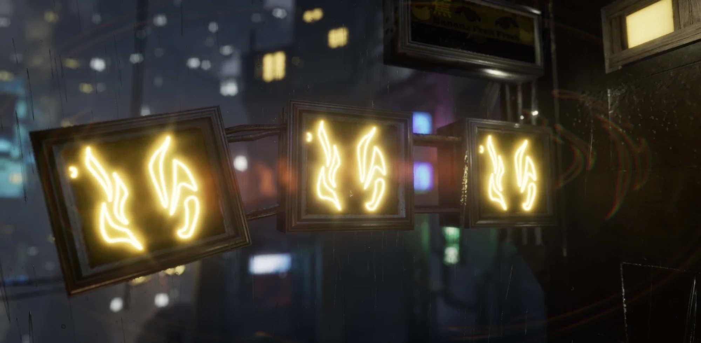
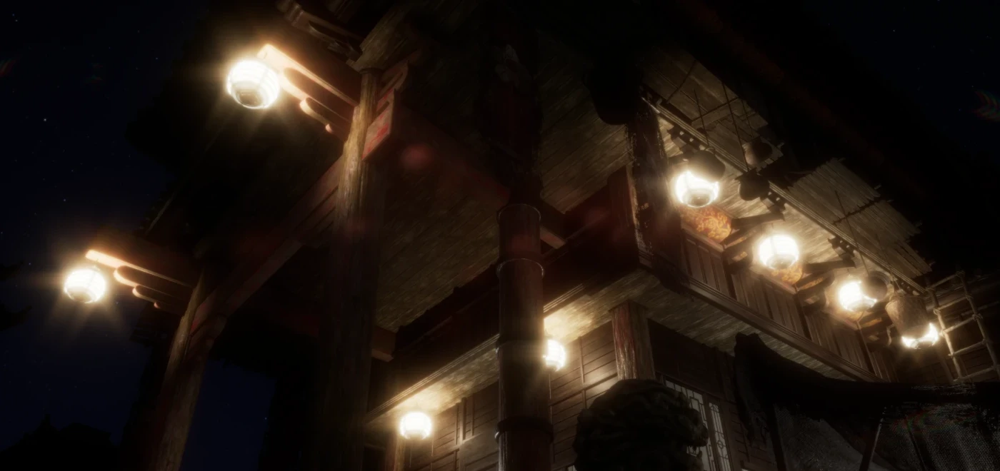
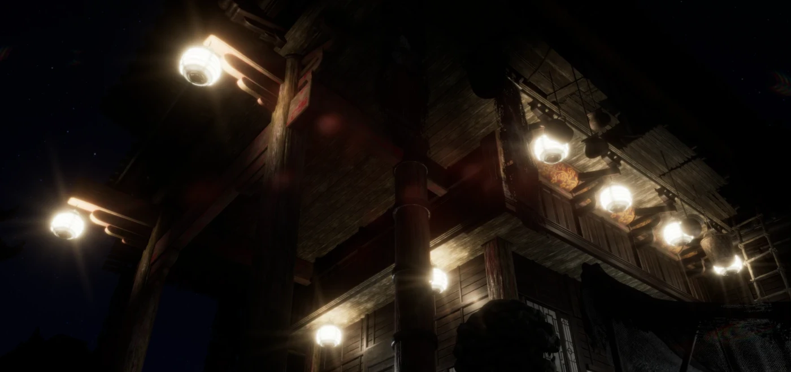
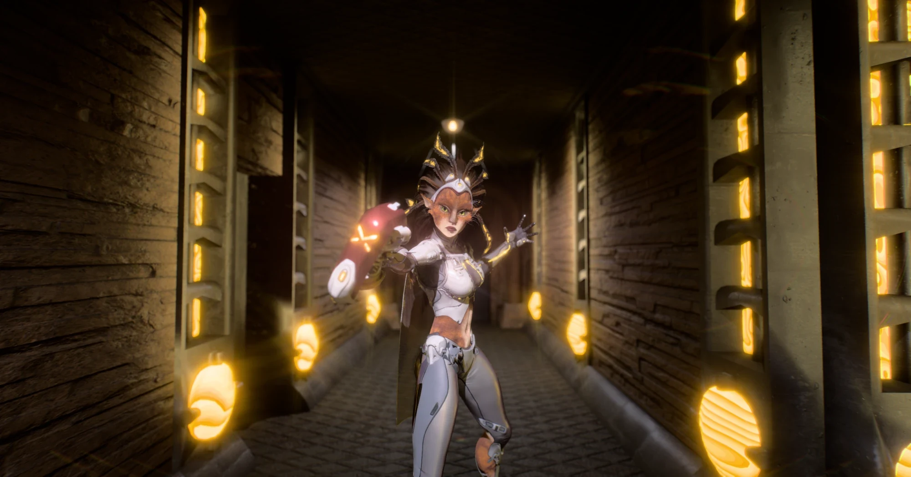
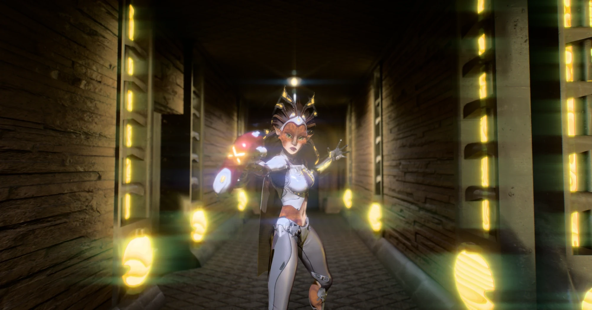
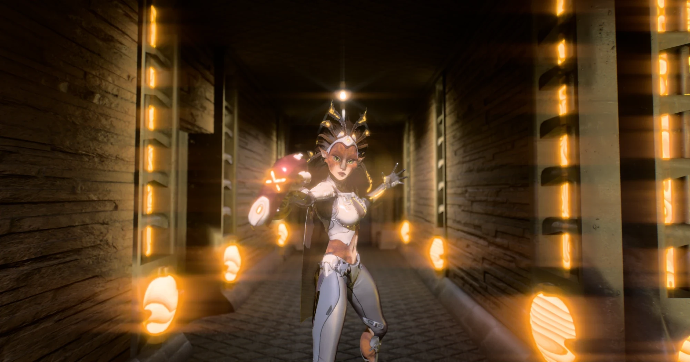
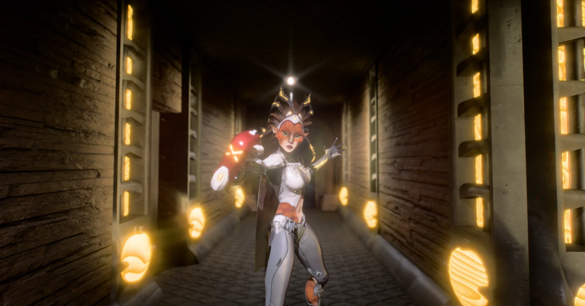
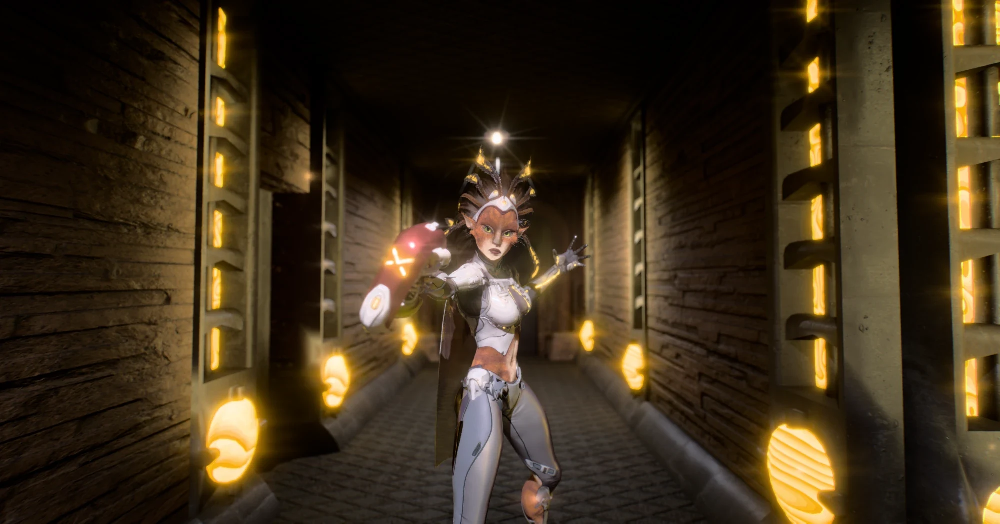

Effects
Lens flares
A lens flare is what you get when a bright light hits a camera lens. A real lens is a stack of differently shaped glass elements and some of the light bounces between them before it reaches the sensor. Flares were seen as a defect for a long time and filmmakers tried to avoid them. Today they are a look of their own and used well they make an image feel more real.
The flares in HLSLens are procedural. You don't have to place anything in your level for them to work, no Niagara effects or sprites. Every frame HLSLens finds the bright pixels on screen and builds the flare out of them. The engine does the same thing, HLSLens just gives you a lot more to work with.
- Where to find it
- The look lives in a Lens Flare Profile asset. The volume picks the profile and has master controls under Bloom & Lens Flares → Lens Flares.
- Layers
- Ghosts, Halo, Streak and Glare
- Cost
- Depends a little on your scene and on the glare mode. See Performance.
How it works
The flare is drawn from the image itself and added before tonemapping. So anything bright can flare: the sun, headlights, a neon sign, a lit window, a reflection. If the light moves, the flare moves with it, also if it changes color the flare does too.
Flares are an artistic imitation of a lens rather than a simulation of one specific lens, so shape them however you need.

Profile and volume
A Lens Flare Profile is a data asset that describes one lens: its ghosts, halo, streak and glare. You can make one in the Content Browser or just modify the presets that come with the plugin. A new default Advanced Post Process Volume uses the Classic Prime profile.
The volume points to a profile and controls how strong each layer is, without touching the profile itself. That way several levels can share one lens and still be tuned on their own.
| Layer | What it looks like |
|---|---|
| Ghosts | Soft circles, hexagons or ovals lined up across the screen. Copies of the light bouncing inside the lens. |
| Halo | A ring around the center of the screen, like the one a wide-angle lens makes. |
| Streak | A thin horizontal line through the light. The anamorphic cinema look. |
| Glare | The star shape on the light itself, also called sunburst or starburst. |
Ghosts
Ghosts sit on an imaginary line that runs from the light through the center of the screen. When the light moves, they slide along that line. Each ghost's Scale decides where on the line it sits:
| Scale | −1 |
0 |
0.5 |
1 |
1.5 |
|---|---|---|---|---|---|
| Position | Opposite side of the screen | Screen center | Halfway | On the light | Past the light |
A profile holds up to 12 ghosts and each one has its own settings, so you can mix small sharp hexagons with big soft ovals. What you pick really depends on the kind of lens you want to copy.
| Setting | What it does | Default | Range |
|---|---|---|---|
| Color | Color of the ghost. Alpha is its brightness. | White | — |
| Scale | Where the ghost sits on the line. 1 is on the light, 0 the screen center, negative values are on the opposite side. |
0.8 | −4 to 4 |
| Size | Size as a fraction of the screen height. At 0 you get a small copy of the whole screen. |
0.05 | 0 to 0.5 |
| Softness | How soft the outer edge is. Low is crisp, high is blurry. | 0.35 | 0 to 1 |
| Rim Strength | Brightens the edge of the ghost. 0 gives a flat disc. |
1.0 | 0 to 4 |
| Rim Color | Color of that edge. Only visible when Rim Strength is above 0. | White | — |
| Blade Count | Gives the ghost corners, like an aperture. 0 is round, and more blades get closer to a circle again. |
0 | 0 to 16 |
| Aspect | 1 is a circle, higher is wider, lower is taller. |
1.0 | 0.25 to 6 |
| Crescent Offset | Cuts a second disc out of the ghost and leaves a crescent. Negative flips the side. 0 is off. |
0 | −1.5 to 1.5 |
| Align To Axis | Turns the shape so it points along the line to the screen center. Only shown for ghosts with blades or a crescent. | Off | — |
Advanced ghost settings
| Setting | What it does | Default | Range |
|---|---|---|---|
| Blade Rotation | Turns the corners, in degrees. | 0 | 0 to 360 |
| Blade Roundness | Rounds off the corners. 0 is sharp. |
0 | 0 to 1 |
| Source Radius Min | The ghost fades out when its light is closer to the screen center than this. 0 is the center, 1 the corner. |
0 | 0 to 2 |
| Source Radius Max | The ghost fades out when its light is farther from the center than this. 2 means off. |
2 | 0 to 2 |
These apply to all ghosts in the profile at once:
| Setting | What it does | Default | Range |
|---|---|---|---|
| Ghost Intensity | Brightness of all ghosts together. | 0.625 | 0 to 5 |
| Ghost Chroma Shift | Red/blue fringe on the edges of the ghosts. | 0.015 | 0 to 0.1 |
| Ghost Saturation | 1 keeps the colors as set on each ghost. Higher is more vivid. |
1.0 | 0 to 3 |
| Ghost Energy Conservation | Advanced. How much big ghosts dim as they spread out. 1 is physical, so large ghosts are faint. Lower keeps them as bright as small ones. |
1.0 | 0 to 1 |
When you are designing ghosts, r.HLSLens.LensFlare.GhostDebug shows one ghost at a time. Set it to the ghost's index (0 to 11) and back to -1 when you're done.
Halo
The halo is a ring around the center of the screen, drawn from the same bright pixels as the ghosts. It can be big or small, soft or sharp, and it can have corners like an aperture.
| Setting | What it does | Default | Range |
|---|---|---|---|
| Halo Intensity | Brightness of the ring. | 0.5 | 0 to 5 |
| Halo Width | Radius of the ring. | 0.6 | 0 to 1 |
| Halo Mask | Fades out the inside of the ring. Higher gives a thinner, sharper ring. | 0.5 | 0 to 1 |
| Halo Compression | Bends the ring toward the center, like a fisheye lens. | 0.65 | 0 to 1 |
| Halo Chroma Shift | Splits the colors slightly at the edge. | 0.015 | 0 to 0.1 |
| Halo Ring Smoothness | Smears the ring around itself so it looks less like a hard line. | 0.2 | 0 to 0.5 |
| Halo Tint | Colors the ring. | White | — |
| Halo Softness | Low gives a thin crisp line, high a milky glow. | 0 | 0 to 1 |
| Halo Aspect Ratio | Higher is taller and narrower, lower is wider and flatter. | 1.0 | 0.2 to 3 |
Advanced halo settings
| Setting | What it does | Default | Range |
|---|---|---|---|
| Halo Edge Sharpness | How hard the edge transition is. | 1.0 | 0.1 to 4 |
| Halo Blade Count | Breaks the circle into flat facets like an aperture. 3 to 6 gives clearly visible facets. 0 is off. |
0 | 0 to 12 |
| Halo Blade Strength | How visible those facets are. | 1.0 | 0 to 1 |
| Halo Tap Count | Smooths out sparkle and jagged edges. Each step costs a bit more GPU time. | 1 | 1 to 5 |
| Halo Dither Strength | Adds a little grain to hide banding in the ring. | 0 | 0 to 0.1 |
| Halo Zoom | How zoomed in the lights look inside the halo. | 1.0 | 0.1 to 3 |
Streak
The streak is the thin horizontal line through a bright light that anamorphic lenses are known for. It has a bright core line, a wider band of glow around it and a few faint extra lines, each part has its own color. So a streak can go from a white center to a blue or orange tail.
Not every lens has one. Classic Prime and Modern Hex have no streak, while the anamorphic presets are mostly built around it. At Intensity 0 the streak is skipped.
| Setting | What it does | Default | Range |
|---|---|---|---|
| Streak Intensity | Strength of the streak. 0 turns it off. |
0 | 0 to 10 |
| Streak Length | 1 is about edge to edge for a bright light. |
1.0 | 0 to 2 |
| Streak Threshold | How bright a light must be to get a streak. Without it every bright pixel gets smeared and the frame turns into a colored wash, so raise it until only the real light sources streak. | 4.0 | 0 to 50 |
| Streak Thickness | Thickness of the line. | 0.5 | 0 to 4 |
| Streak Tint | Color of the far tail. | Light blue | — |
| Streak Band Intensity | The wide glow around the line. 0 is off. |
2.0 | 0 to 10 |
| Streak Band Width | How wide that glow is. | 0.02 | 0 to 0.06 |
| Streak Chromatic Split | Makes one end of the spectrum reach further. Positive gives blue tails, negative red tails. Small values already do a lot. | 0 | −0.25 to 0.25 |
| Streak Hot Core | Turns the center of the streak white while the tails keep their color. | 0 | 0 to 1 |
The advanced streak settings are Streak Core Tint and Streak Band Tint (colors of the core line and the band), and Streak Secondary Intensity, which controls the faint extra lines above and below the main one.
Glare
Glare is the shape that sits on the light itself and makes it feel bright. It is part of the profile, the volume has the Glare Intensity multiplier. There are three glare modes:
| Three Streak Glare | Directional Blur | Diffraction Starburst | |
|---|---|---|---|
| Look | A tapered star of three streaks: one upright, two diagonal. They tilt outward and get shorter toward the screen edges. | The bright parts of the image are smeared in several directions. Big bright objects make wide, soft smears. | The spiky star a real aperture makes, with rainbow colors along the spikes. Can also do vanes and star filter rays. |
| Feel | Photographic | More artificial, very adjustable | Physical, camera-like |
| Cost | Higher | Much cheaper | Higher |


The same scene with each glare mode. Pick a tab to switch between them.
Settings every mode has:
| Setting | What it does | Default | Range |
|---|---|---|---|
| Glare Mode | Three Streak Glare, Directional Blur or Diffraction Starburst. | Three Streak Glare | — |
| Glare Intensity | The main brightness control. It doesn't change the length. | 0.3 | 0 to 10 |
| Glare Source Clamp | Stops extremely bright pixels from making glare so bright it blows out the screen. Lower it if the sun's glare is too strong. 0 means no clamp. |
60 | 0 to 200 |
Three Streak Glare
| Setting | What it does | Default | Range |
|---|---|---|---|
| Scale | Length of each streak. X is the upright one, Y and Z the diagonals. 0 removes a streak, so (1, 0, 0) leaves only the upright one. |
1, 1, 1 | 0 to 10 |
| Max Size | The longest a streak can get, however bright the light. This is what keeps the sun from making a huge glare. | 0.6 | 0.01 to 1 |
| Glare Divider | How bright a light must be for a long streak. Higher means only the brightest lights get long streaks. Lower lets weak lights have them too. | 1.0 | 0 to 200 |
| Glare Tint | Colors the glare. Alpha 0 hides it. The streaks already fade from white to blue to red, so a tint can remove one end. A pure red tint, for example, leaves a white-to-red streak. |
White | — |
Directional Blur
| Setting | What it does | Default | Range |
|---|---|---|---|
| Directions | Number of streak arms. 1 gives horizontal anamorphic streaks, 2 a cross, 3 a six-point star, 4 an eight-point star. |
3 | 1 to 4 |
| Rotation (degrees) | Turns the whole star. | 0 | 0 to 360 |
| Streak Length (Passes) | 2 reaches about 16 pixels, 3 about 64 and 4 about 256. More passes cost more. |
3 | 2 to 4 |
| Streak Falloff | How fast the streak fades toward the tip. 0.85 is short and tight, 0.99 long and gradual. | 0.87 | 0.80 to 0.99 |
| Tint | Colors the glare. Alpha scales the brightness. | White | — |
Directional Blur can also color the streaks by their distance from the light, which imitates the rainbow split of a real lens:
| Setting | What it does | Default | Range |
|---|---|---|---|
| Dispersion Intensity | How strong the color split is. 0 is off. |
0.7 | 0 to 1 |
| Spectral Gradient | Optional 1D gradient texture. The left edge is the color at the light, the right edge the color at the tip. | None | Texture |
| Dispersion Bias | Advanced. Positive pushes the colors toward the tips and keeps more of the streak white. | 0.2 | −1 to 1 |
| Dispersion Contrast | Advanced. Higher gives a sharper switch between colors. | 2.0 | 0.5 to 6 |
| Vignette Intensity | Advanced. How much the screen edges suppress the glare. This hides glare popping in and out at the edges. | 0.25 | 0 to 1 |
| Vignette Radius | Advanced. Where that suppression starts. | 0.45 | 0.1 to 0.5 |
Diffraction Starburst
This mode makes the star a real camera aperture produces. Every blade edge makes two spikes, so with an even blade count you get as many spikes as blades, with an odd count you get twice as many. The Diffraction Star and Star Filter presets use it.
| Setting | What it does | Default | Range |
|---|---|---|---|
| Blades | Number of aperture blades. | 7 | 0 to 16 |
| Blade Roundness | Rounder blades give weaker spikes. | 0.05 | 0 to 1 |
| Vanes | Thin supports in front of the lens, like in a telescope. Each vane adds two spikes, so 4 makes a cross. 0 is off. |
0 | 0 to 8 |
| Star Filter Points | Long rainbow rays, like a cross-screen filter. 4, 6 and 8 are common. 0 is off. |
0 | 0 to 12 |
| Star Filter Strength | Brightness of those rays. | 0.6 | 0 to 1 |
| Spike Length | How far the dim tips of the spikes reach. | 0.5 | 0 to 1 |
| Rainbow | Color along the spikes. 0 is white, 1 physical, higher exaggerated. |
1.0 | 0 to 3 |
| Detail | Dust on the lens. Adds fine detail between the spikes. | 0.3 | 0 to 1 |
| Starburst Intensity | Multiplies Glare Intensity for this mode. | 1.0 | 0 to 8 |
| Core Glow | The round glow where the spikes meet. 0 leaves only the spikes. |
1.0 | 0 to 4 |
| Size | Size as a fraction of the screen height. | 0.12 | 0 to 1 |
| Max Size | Upper limit for the size, so the sun can't cover the screen. | 0.45 | 0 to 1.5 |
| Rotation (degrees) | Turns the starburst. | 0 | 0 to 360 |
| Threshold | How bright a light must be to get a starburst. | 1.0 | 0.001 and up |
Glare Tint from Three Streak works here as well. The advanced settings are Blade Rotation, which turns the spikes; Star Filter Density and Star Filter Rotation (15° by default), which shape the filter rays; and Brightness Compression. That last one decides how much brighter a strong light's starburst is than a weak one's. At 0 the sun outshines a lamp like it would on a real camera, at 1 every light gets the same brightness.
By default a big bright object, like a window, gets one starburst in its middle. Set r.HLSLens.LensFlare.Starburst.BigSources 0 if you only want small lights to have one.
Presets
A profile has a button for each preset. Clicking one resets the profile to that look, and you can change anything from there.
| Preset | Look |
|---|---|
| Classic Prime | Lots of soft colored ghosts. Small bright spots near the light, bigger see-through ones further out, and a halo. No streak. |
| Anamorphic Azure | A blue anamorphic streak with a hot white core, wide blue oval ghosts and a faint halo. |
| Anamorphic Amber | A warm orange streak with amber and teal ovals. |
| Sci-Fi Anamorphic | A strong deep-blue streak with a very white core. |
| Modern Hex | Crisp hexagon ghosts in green, magenta and blue, and a thin faceted ring. No streak. |
| Diffraction Star | Small crisp ghosts and a sun star with extra spikes from vanes and a star filter. |
| Star Filter | Long rainbow rays and a few faint ghosts. |






The profile also has a Lens Flare Quality setting (advanced). Cinematic uses more expensive GPU work and makes the ghosts sharper. Standard and Performance look quite similar, Performance is just an easy way to save some GPU time. I recommend trying it out.
Blending between profiles
When volumes overlap, HLSLens blends their profiles by the volume weights. Colors and numbers blend smoothly like with all other post-processing settings. Things that can't blend, like a ghost's blade count, just switch over. Ghosts blend slot by slot, so a ghost that only exists in one profile fades in or out.
So you can walk from a sunny street with a warm vintage lens into a dark corridor with a cold anamorphic one, with the flare changing gradually.
Volume settings
These are on the Advanced Post Process Volume under Bloom & Lens Flares → Lens Flares.
| Setting | What it does | Default | Range |
|---|---|---|---|
| Master Gradient | A gradient texture that masks or colors the flare by its distance from the screen center. | Plugin gradient | Texture |
| Flares Master Intensity | Brightness of the whole flare effect. | 1.0 | 0 to 10 |
| Tint | Colors the whole flare. | White | — |
| Ghost Intensity | Multiplies the profile's ghost intensity. | 1.0 | 0 to 4 |
| Halo Intensity | Multiplies the profile's halo intensity. | 1.0 | 0 to 4 |
| Streak Intensity | Multiplies the profile's streak intensity. | 1.0 | 0 to 4 |
| Glare Intensity | Multiplies the profile's glare intensity. | 1.0 | 0 to 4 |
Which pixels are bright enough to flare is decided by the threshold, which lens flares share with bloom. By default (Bloom Only) the flares have no threshold at all, so even dim lights add a little to them.
Common questions
Do I need to set anything up on my lights?
No. The flares are procedural and appear wherever something is bright enough.
Are the flares just images?
No. Every ghost, ring and streak is drawn by the shader from your scene.
Why is there no flare?
Check that the volume's Flares Master Intensity and the Ghost, Halo, Streak and Glare multipliers are above 0, and that a profile is assigned. If you use a lens flare threshold (Shared or Lens Flare Only), it might be too high. Exposure changes how bright everything is, so try raising it. Also make sure the camera is inside the volume, or that the volume is set to Infinite Extent (Unbound).
My whole screen is covered in color.
Raise the Streak Threshold, switch the threshold mode to Shared and raise the level, or lower the intensities.
How is this different from the engine's lens flare?
The engine gives you a fixed set of ghosts. In HLSLens you design every ghost yourself, and you also get the halo, streak and glare layers.